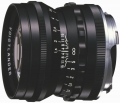

采用含1片非球面镜片的6片5组镜头结构，最近对焦距离为0.7m，内置10片光圈叶片，滤镜直径为49mm。配备圆形遮光罩。
看到下面的对比图很无语，又据说L39版与这款所谓复刻版是一样的光学结构，所以屌丝再屌丝了一把。
全开可用，锐度足够，性价比很高。L39银色很漂亮，重量轻，和M-E也搭。
L39最近对焦0.9米，近摄有点吃亏，因为国产转接环精度不够导致刻度不在正上方，有点偏，据说福伦达的也不行，可能是个体差异。L39的做工手感都比不上35/1.2 II那支。
性价比很高素质也很高的一颗头。 M口的大光圈标头里面，如果说ZM50 1.5风格特点素质都很像Summilux的E43的话，这颗就更像是E46。更强悍的解像力，更近的最近对焦距离，相对更高的反差和硬朗的成像。素质超群，虽然不及50 1.4A，但是已经是这个规格的高水准表现了。全开即可用，轻微紫边，焦外不算梦幻的那一类，但也不硬，不会抢掉主体的风头。缩一档光圈紫边基本消失，解像力进一步提升。色彩也有自己的特点，搭配M9和A7都有很好的表现。 总体来说是非常让人放心的实用之选。用它的时候永远不会担心因为镜头的表现而毁掉某些画面，没有独一无二的特点，没什么脾气的头，拿着它就不用琢磨太多风格匹配和场景的禁忌，全身心的在拍照这件事上了。
在M口的大光圈标头里性价比高。 全开可用，解像力比较高，反差适中。 比较典型的福伦达色彩，比起徕卡偏冷 比ZM50强在最近对焦，焦外也是现代镜头里比较好的那一类，看着舒服不抢眼 外观亮骚，银色质感好情怀镜，黑色低调闷骚有实力。追求更高性价比可以选择L39那一版，便宜很多素质基本一致。 基本没什么短板，各项水平都很高的好头。
比起ZM50 1.5稍长，比起至尊的那颗体积也稍微大了一点点，不过不论装在A7系还是M9上都很协调手感刚刚好。 对焦环没有蔡司的那种丝滑的淫荡手感 非常典型的现代头，没有什么短板也没什么特别迷人的特点（连ZM那支都还有自己独特的焦外）。对任何一颗现代风格的标头基本都不会怎么中毒了（当然除了夜神啦），但是会用久了会对那些特点鲜明的老镜头心里发痒。。。
好头。
全开可用，反差和锐度都比比ZM5015好。asph的功劳。银色有分量，比ZM5015的银色好。最近对焦距离有0.7。总体已经非常接近徕卡M5014a。价格不算贵。
色彩没有徕卡蔡司舒服，对焦环太贴近机身，附送的遮光罩等于没用。